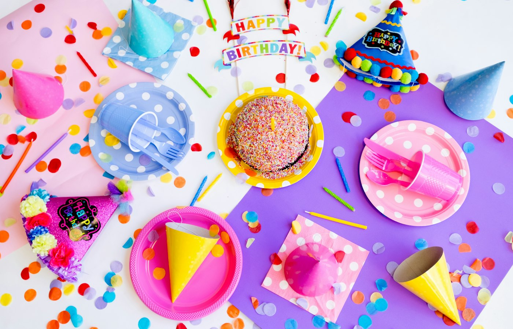
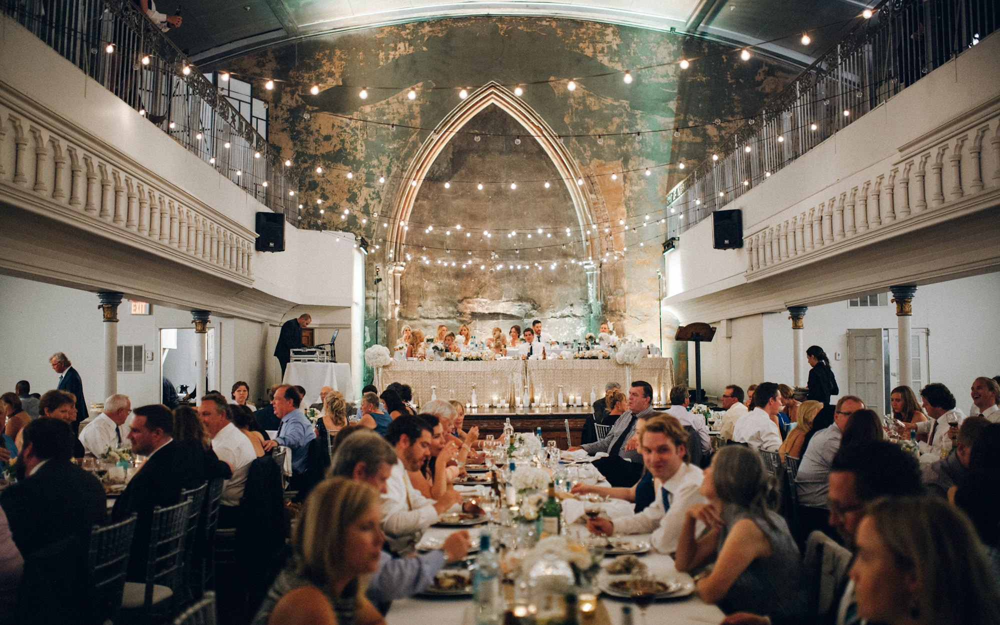
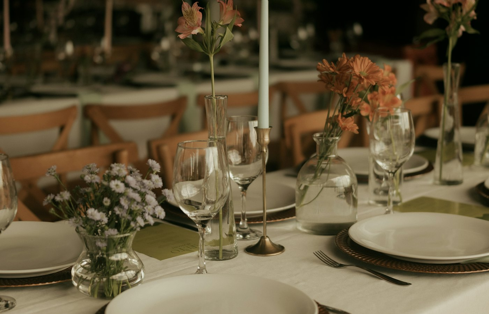
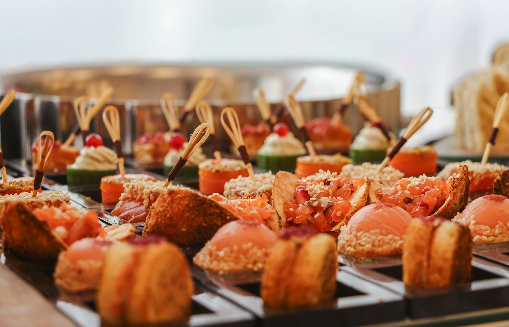
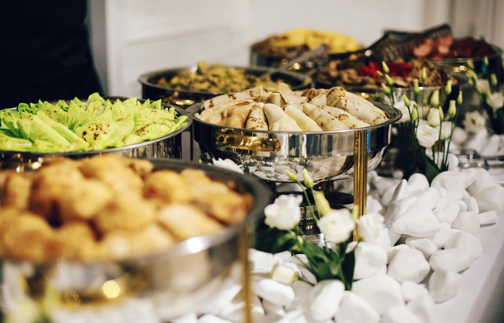
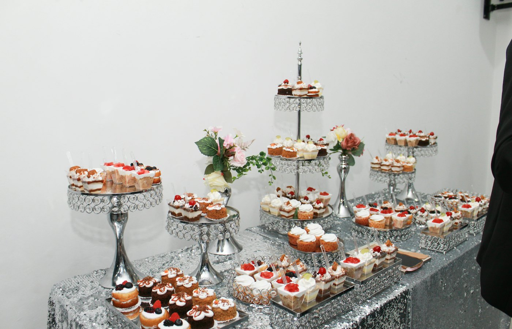
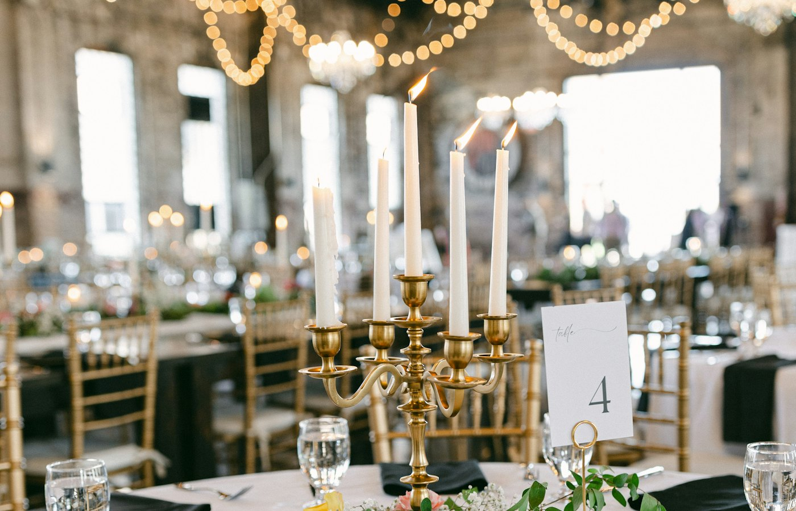
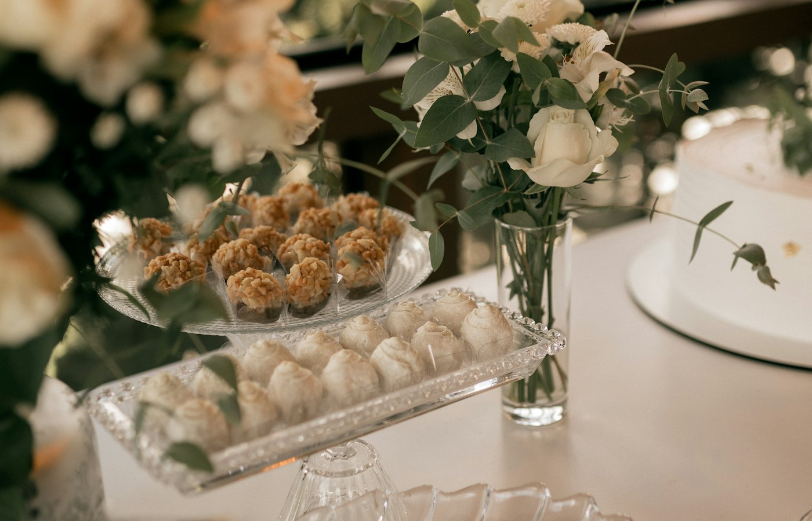
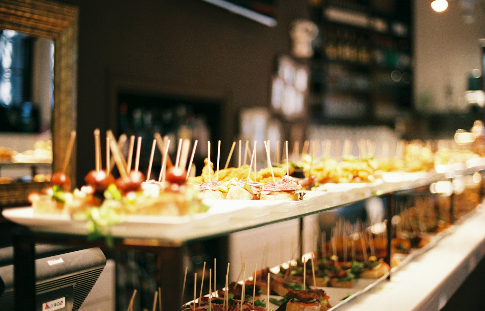

Vila festbuffet e eventos
Buffet para festas infantis, casamentos e formaturas em Piracicaba. Conte a data e o número de convidados e a gente monta a sua festa.
5.761 pessoas acompanham a Vila Fest no Instagram5.761seguidores no Instagram @vilafest.piracicaba
3 tipos de festainfantil, casamento e formatura
Várias opçõesde cardápio para montar o buffet do seu jeito
Que festa vamos fazer?
Do aniversário da criançada ao jantar de casamento, a Vila Fest cuida do buffet para você aproveitar a festa com os convidados.

Opções de cardápio
A Vila Fest trabalha com várias opções de cardápio. Algumas ideias do que pode entrar no seu buffet:

Salgados e finger food
Para servir quente durante toda a festa.

Buffet quente
Pratos servidos em réchaud para jantares.

Mesa de doces
Docinhos e sobremesas para fechar a noite.
Bebidas e brinde
Para a hora do parabéns ou do brinde.
Texto de exemplo. No site final entram os cardápios reais da Vila Fest. Fotos ilustrativas.
Receber os cardápiosClima de festa
Fotos ilustrativas. No site final entram as fotos das festas da Vila Fest, as mesmas que fazem sucesso no Instagram.



Do primeiro oi à festa
Fechar o buffet é simples e tudo começa no WhatsApp.
Conte sobre a festa
Mande a data, o tipo de festa e quantos convidados você espera.
Escolha o cardápio
A Vila Fest envia as opções e ajuda a montar o buffet certo para o seu evento.
Aproveite
No dia, é só chegar e curtir com quem você ama.
Texto de exemplo. No site final entra o jeito de trabalhar da Vila Fest.
@vilafest.piracicabaVila Fest Buffet e Eventos
5.761seguidores
Nov/2026posts recentes
Piracicaba, SP
No site final entra o endereço do salão.
Perguntas frequentes
Quanto custa o buffet?
Depende do tipo de festa, do cardápio e do número de convidados. Mande essas informações no WhatsApp e a Vila Fest responde com o orçamento.
Que tipos de festa vocês atendem?
Festas infantis, casamentos e formaturas.
Tem mais de uma opção de cardápio?
Sim, a Vila Fest tem várias opções de cardápio. Peça pelo WhatsApp para receber todas.
Com quanta antecedência devo reservar?
Quanto antes, melhor, principalmente para sábados. Consulte a sua data pelo WhatsApp.
Vamos festejar?
Chame a Vila Fest no WhatsApp, conte a data e receba o orçamento do seu buffet.
Consultar minha data